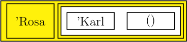
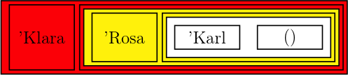
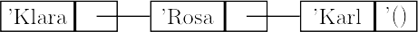
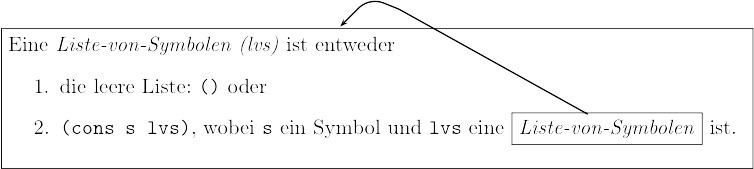
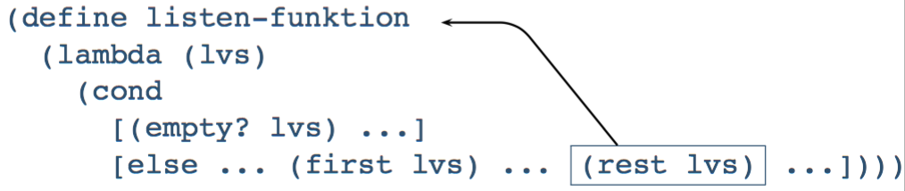

Nicht-numerische Daten
Einführung in die Programmierung
Was sind nicht numerische Daten?
- Zeichen
- Zeichenketten
- Bilder
- Töne
- …
- Symbole (LISP)
Symbolische Ausdrücke
Symbole
- Symbole sind eine einfache Möglichkeit für die Repräsentation nicht-numerischer Daten.
- Symbole sind aufgebaut wie Variablennamen; damit sie nicht als solche interpretiert werden, ist ein Hochkomma voranzustellen.
Beispiele:
'symbol 'KarlMarx 'Dies-ist-auch-ein-Symbol 'x1
- Symbole dürfen Buchstaben, Ziffern und ein paar Sonderzeichen (keine Leerzeichen!) enthalten.
- Symbole sind – wie Zahlen – atomare Daten.
- Symbole werden – wie Zahlen – zu sich selbst ausgewertet.
Einzige Operation auf symbolischen Atomen ist die Prüfung auf Gleichheit:
equal?erwartet zwei Symbole als Argumente und liefert#truedann und nur dann, wenn sie identisch sind:(equal? 'Hallo 'Hallo) ;;=> #true (equal? 'Karl 'Rosa) ;;=> #false (equal? 'Hallo hallo) ;;=> #true, wenn hallo für 'Hallo steht
S-Ausdrücke
- Symbolische Ausdrücke (kurz: S-Ausdrücke) wurden erfunden von McCarthy für LISP.
- Definition: (vorläufig)
Ein S-Ausdruck ist- ein Atom, z.B.
27,’Karl,’ist eine Folge von S-Ausdrücken, eingeschlossen in (), z.B.
’(Karl ist 27),’((Dies ist) (eine Liste) (mit 3 Elementen))
Solche S-Ausdrücke heißen Listen. (Man beachte die Rekursivität dieser Definition!)
- ein Atom, z.B.
- Atome sind entweder numerisch, boolesch oder symbolisch
Darstellung von Formeln als S-Ausdrücke
Bestandteile einer Formel:
- Konstanten, Variablen und duale Operatoren
Formel S-Ausdruck Konstante numerisches Atom Variable symbolisches Atom Operator symbolisches Atom \(p+q\) (ADD \(p\) \(q\)) \(p-q\) (SUB \(p\) \(q\)) \(p\ast q\) (MUL \(p\) \(q\)) \(p/q\) (DIV \(p\) \(q\)) \(p^q\) (EXP \(p\) \(q\)) \(p\) und \(q\) stehen für Teile einer Formel
Die Formel \(x^2+3y-5\) wird durch den S-Ausdruck
’(ADD (EXP x 2) (SUB (MUL 3 y ) 5))dargestellt.
Konstruktion von Listen
Ausgangspunkt für die Konstruktion einer Liste ist die leere Liste, die durch
emptyoder
’()repräsentiert wird.
Mit der Funktion
conskann ein Element als neues erstes Element einer Liste hinzugefügt werden.(cons ’Karl empty) ;;=> (Karl) (cons ’Rosa (cons ’Karl empty)) ;;=> (Rosa Karl) (cons ’Klara (cons ’Rosa (cons ’Karl empty))) ;;=> (Klara Rosa Karl)
- Die Standardfunktion
conserwartet zwei Argumente:- ein neues erstes Element
- eine Liste
- jede Liste kann man sich aus zwei Teilen bestehend vorstellen:
- das erste Element
- die Restliste
- die drei obigen Listen können dann so veranschaulicht werden:



- eine andere gebräuchliche Darstellung für Listen:

Zerlegung von Listen
- Racket stellt zwei Funktionen bereit zum Zugriff auf die beiden
Komponenten einer Liste:
firstliefert – angewendet auf eine nicht leere Liste – das erste Element.restliefert – angewendet auf eine nicht leere Liste – die Restliste.
- Der Zusammenhang zwischen
cons,firstundrestkann durch die folgenden Gleichungen beschrieben werden:
\((first (cons\ elem\ liste)) = elem\)
\((rest (cons\ elem\ liste)) = liste\) Beispiele:
(first (cons 1 (cons 2 (cons 3 empty)))) ;;=> 1 (first (rest (cons 1 (cons 2 (cons 3 empty))))) ;;=> 2 (first empty) ;;=> first: expects a non-empty list; given: ()
Funktionen für die Verarbeitung rekursiv definierter Datenstrukturen
Rekursive Datenstrukturen
Für einen Gebrauchtwagenhändler repräsentieren wir die Menge der im Angebot befindlichen Automarken in einer Liste von Symbolen, z.B. so:
(’VW ’Opel ’Toyota)
- Listen können beliebig lang werden (vgl. Definition des S-Ausdrucks).
Eine Liste-von-Symbolen (lvs) kann als Datenstruktur wie folgt
rekursiv definiert werden:
- Eine Liste-von-Symbolen ist entweder
- die leere Liste:
emptyoder (cons s lvs), wobeisein Symbol undlvseine Liste-von-Symbolen ist
- die leere Liste:
- Eine Liste-von-Symbolen ist entweder
- Bei Listen handelt es sich also um gemischte Daten:
- Die leere Liste
emptykann mit dem Prädikatempty?, die nicht-leere Liste mit dem Prädikatcons?erkannt werden.
- Die leere Liste
Verarbeitung beliebig langer Listen
- Es soll geprüft werden können, ob in der Liste mit den Automarken
’BMWvorkommt. Gemäß unserer bisherigen Regeln schreiben wir die Zweckbestimmung und einen passenden Funktionskopf auf:
;; ermittelt, ob das Symbol 'BMW in der liste-von-symbolen auftritt (define enthaelt-bmw? (lambda [lvs] ...))
Verträge für Funktionen (Regel 10)
Regel 10: Von nun an schreiben wir vor jeden Funktionskopf einen Vertrag als Kommentar.
Der Vertrag beschreibt, welche Arten von Daten (Datentypen) die Funktion als Argumente erwartet und welche Datenart die Funktion als Resultat liefert:
<Typ von Argument 1> ... <Typ von Argument n> -> <Typ des Resultats>
Für unser Beispiel
enthaelt-bmw?lautet der Vertrag;; enthaelt-bmw? : (list-of symbol) -> boolean
Den Vertrag fügen wir hinter die Zweckbestimmung ein:
;; ermittelt, ob das Symbol 'BMW in der liste-von-symbolen auftritt ;; enthaelt-bmw? : (list-of symbol) -> boolean (define enthaelt-bmw? (lambda [lvs] ...))
Angabe von Tests für enthaelt-bmw?
(check-expect (enthaelt-bmw? empty) #false) (check-expect (enthaelt-bmw? (cons 'VW (cons 'Opel (cons 'Toyota empty)))) #false) (check-expect (enthaelt-bmw? (cons 'VW (cons 'BMW (cons 'Toyota empty)))) #true)
Anlegen einer Funktionsschablone
- Nun definieren wir eine Funktionsschablone gemäß Regel 9 (für die Verarbeitung gemischter Daten), die der Struktur der Datendefinition Liste-von-Symbolen folgt.
Da diese zwei Fälle, die leere und die nicht-leere Liste, unterscheidet, ergibt sich folgende Schablone:
(define f (lambda [lvs] (cond [(empty? lvs) ...] [(cons? lvs) ...])))
Eine nicht-leere Liste ist eine aus zwei Komponenten zusammengesetzte Datenstruktur:
- dem ersten Element
- der Restliste (ohne das erste Element)
Dem Prinzip von Regel 8 (für strukturverarbeitende Funktionen) folgend ergänzen wir die Schablone nun um die Aufrufe der Selektionsfunktionen für diese beiden Komponenten.
Aus diesen Überlegungen ergibt sich folgende Schablone:
(define f (lambda [lvs] (cond [(empty? lvs) ...] [(cons? lvs) ... (first lvs) ... (rest lvs) ...])))
- Die Auslassungszeichen sind dann entsprechend der Zweckbestimmung auszufüllen, d. h. die Lösung muss aus den Zugriffen auf das erste Element und die Restliste geeignet kombiniert werden.
- Kehren wir dazu zu unserem Beispiel zurück.
Benutzung der Schablone für enthaelt-bmw?
Die Schablone angewendet auf
enthaelt-bmw?, wobei die Lösung für den Fall der leeren Liste bereits eingetragen ist:(define enthaelt-bmw? ;;;;;;;;;;;;;; (lambda [lvs] (cond [(empty? lvs) #false] ;;;;;; [(cons? lvs) ... (first lvs) ... (rest lvs) ...])))
Ausfüllen der Schablone für enthaelt-bmw?
Nun betrachten wir die Komponenten der nicht-leeren Liste. Falls das erste Element das gesuchte ist, muss die Funktion
#trueliefern:(define enthaelt-bmw? (lambda [lvs] (cond [(empty? lvs) #false] [(cons? lvs) (cond [(equal? (first lvs) 'BMW) #true] ;;;;;;;;;;;;;;;;;;;;;;;;;;;;;;; [else ... (rest lvs) ...])])))
Falls das gesuchte Symbol nicht das erste in der Liste ist, hängt das Ergebnis der Funktion davon ab, ob es in der Restliste gefunden wird. Da die Restliste ja selbst wieder eine Liste-von-Symbolen ist, ist auf sie die Funktion
enthaelt-bmw?anwendbar:(define enthaelt-bmw? (lambda [lvs] (cond [(empty? lvs) #false] [(cons? lvs) (cond [(equal? (first lvs) 'BMW) #true] [else (enthaelt-bmw? (rest lvs))])])))
- Damit ist die Funktion vollständig. (Zu finden unter enthaelt-bmw.rkt in moodle)
Systematisierung des Entwurfs rekursiver Funktionen
Datendefinition
- Die Funktion
enthaelt-bmw?wurde unter Verwendung der Regeln 8 und 9 (ergänzt um Regel 10) entwickelt. - Falls man in der Analyse der zu verarbeitenden Daten feststellt, dass die Benutzung einer Liste (mit beliebig vielen Elementen) angemessen ist, wird diese zunächst präzise als rekursive Datenstruktur definiert.
- Die Definition einer rekursiven Datenstruktur erfolgt durch Aufschreiben von mindestens zwei Sätzen, wobei mindestens einer einen Rückbezug auf die Definition und mindestens einer keinen Rückbezug auf die Definition aufweist.
- Betrachten wir dazu noch einmal die Definition der Liste von Symbolen:

- Der Pfeil verdeutlicht den Selbstbezug der Definition.
Funktionsschablone
- Die Funktionsschablone wird als bedingte Funktion aufgeschrieben, die für jeden Satz der Definition der rekursiven Datenstruktur eine Frage-Antwort-Kombination enthält.
- Dabei könnte für jede Frage, die eine dem Parameter der Funktion gleichartige Datenstruktur selektiert, ein Pfeil auf den Funktionsnamen gezeichnet werden.
- Man erhält dann eine Funktionsschablone, die zur rekursiven Definition der Datenstruktur so zu sagen isomorph ist:

Anmerkung: Der bisher verwendete Aufruf (cons? lvs) ist hier (und
im Folgenden) durch else ersetzt.
- Dieser Rückwärtspfeil wird durch eine rekursive Anwendung der Funktion ersetzt.
Damit ergibt sich für das Beispiel der Verarbeitung beliebig langer Listen von Symbolen die folgende Funktionsschablone:
(define listen-funktion (lambda [lvs] (cond [(empty? lvs) ...] [else ... (first lvs) ... ... (listen-funktion (rest lvs)) ...]))) ;;;;;;;;;;;;;;;
- Wir sprechen hier von natürlicher Rekursion.
Ausfüllen der Schablone
- Die Entwicklung des Funktionsrumpfs beginnt mit den
Frage-Antwort-Kombinationen, die keine rekursiven Aufrufe enthalten.
- Die Antwort ist in der Regel einfach.
- Sie sollte in den Tests bereits vorkommen.
- Für die rekursiven Fälle ist zunächst vorauszusetzen, dass die rekursive Anwendung der Funktion auf die Restliste bereits das gewünschte Ergebnis liefert.
- Dieses ist mit dem Ergebnis für das erste Element der Liste geeignet
(problemabhängig) zu kombinieren.
- Dieser Schritt besteht in dem Beispiel
enthaelt-BMW?in einer weiteren Fallunterscheidung.
- Dieser Schritt besteht in dem Beispiel
Erweiterung des Regelsatzes für die Entwicklung rekursiver Funktionen
Regel 11:
Schreibe eine präzise Datendefinition für die zu verarbeitende rekursive Datenstruktur auf. Folge dabei dem im Abschnitt Datendefinition angegebenen Muster.
Regel 12:
Formuliere mindestens einen Test für den Fall, dass die rekursive Datenstruktur
- keine Elemente,
- genau ein Element,
- mehr als ein Element
enthält!
Regel 13 (Funktionsschablone)
- Entwickele eine Funktionsschablone, die der rekursiven Struktur der Daten folgt.
- Dazu
- Schreibe das Skelett eines
cond-Ausdrucks auf mit je einer Frage-Antwort-Klausel für jeden nicht-rekursiven und jeden rekursiven Fall! - Notiere dabei für die rekursiven Fälle die passenden
Selektionsausdrücke (
(first ...), (rest ...)). - Dabei ist zu beachten, dass auf den Ausdruck
(rest ...)die zu entwickelnde Funktion rekursiv anzuwenden ist.
- Schreibe das Skelett eines
Listen als Resultate
- Anwendung der Regeln für die Entwicklung rekursiver Funktionen auf Funktionen, die eine Liste als Resultat liefern.
- Dem Gebrauchtwagenhändler soll eine Funktion zur Verfügung gestellt werden, mit dem er ein Modell aus seiner Angebotspalette entfernen kann.
Vertrag, Funktionskopf, Zweckbestimmung
;; entfernt eine Modell (symbol) aus der ;; Modellpalette (liste-von-symbolen) ;; entferne-modell: (list-of symbol) symbol -> (list-of symbol) (define entferne-modell (lambda [modellpalette modell] ...))
Hinzufügen der Tests
;; entfernt eine Modell (symbol) aus der ;; Modellpalette (liste-von-symbolen) ;; entferne-modell: (list-of symbol) symbol -> (list-of symbol) (check-expect (entferne-modell empty 'BMW) empty) (check-expect (entferne-modell '(BMW) 'BMW) empty) (check-expect (entferne-modell '(BMW) 'OPEL) '(BMW)) (check-expect (entferne-modell '(BMW OPEL FORD) 'TOYOTA) '(BMW OPEL FORD)) (check-expect (entferne-modell '(BMW OPEL FORD) 'OPEL) '(BMW FORD)) (define entferne-modell (lambda [modellpalette modell] ...))
Hinzufügen der Funktionsschablone
;; entfernt eine Modell (symbol) aus der ;; Modellpalette (liste-von-symbolen) ;; entferne-modell: (list-of symbol) symbol -> (list-of symbol) (check-expect (entferne-modell empty 'BMW) empty) (check-expect (entferne-modell '(BMW) 'BMW) empty) (check-expect (entferne-modell '(BMW) 'OPEL) '(BMW)) (check-expect (entferne-modell '(BMW OPEL FORD) 'TOYOTA) '(BMW OPEL FORD)) (check-expect (entferne-modell '(BMW OPEL FORD) 'OPEL) '(BMW FORD)) (define entferne-modell (lambda [modellpalette modell] (cond [(empty? modellpalette) ...] [else ... (first modellpalette) ... ... (entferne-modell (rest modellpalette) modell) ...])))
Vervollständigung des Funktionsrumpfs
- Folgende Fälle sind zu unterscheiden:
- Wenn die Modellpalette die leere Liste ist, ist das Resultat
empty. - Wenn das zu entfernende Modell das erste in der Liste ist, so ist das Resultat die Restliste.
- Andernfalls besteht die Ergebnisliste aus dem ersten Modell und der Restliste, aus der das zu entfernende Modell entfernt wurde.
- Wenn die Modellpalette die leere Liste ist, ist das Resultat
;; entfernt eine Modell (symbol) aus der Modellpalette (liste-von-symbolen) ;; entferne-modell: (list-of symbol) symbol -> (list-of symbol) (check-expect (entferne-modell empty 'BMW) empty) (check-expect (entferne-modell '(BMW) 'BMW) empty) (check-expect (entferne-modell '(BMW) 'OPEL) '(BMW)) (check-expect (entferne-modell '(BMW OPEL FORD) 'TOYOTA) '(BMW OPEL FORD)) (check-expect (entferne-modell '(BMW OPEL FORD) 'OPEL) '(BMW FORD)) (define entferne-modell (lambda [modellpalette modell] (cond [(empty? modellpalette) empty] [(equal? (first modellpalette) modell) (rest modellpalette)] [else (cons (first modellpalette) (entferne-modell (rest modellpalette) modell))])))
Rekursive Funktionen und Hilfsfunktionen
Top-down-Entwurf
- Anhand eines weiteren Beispiels soll die Anwendung der Regeln für die Entwicklung rekursiver Funktionen demonstriert werden.
- Während des Entwurfsprozesses kann es sich als zweckmäßig erweisen, für die Lösung bestimmter Teilprobleme eigene Funktionen (Hilfsfunktionen) vorzusehen.
- Dabei ist es hilfreich, diese Hilfsfunktionen als bereits existent vorauszusetzen, um zunächst mit ihrer Hilfe die Lösung des Hauptproblems formulieren zu können.
Diese Vorgehensweise wird
- Top-down-Entwurf oder auch
- schrittweise Verfeinerung
bezeichnet.
Literaturhinweise
- Gelegentlich werden auch die Begriffe Wunschdenken oder Wunschliste
benutzt, z.B. in
- M. Felleisen, R. Findler, M. Flatt, S. Krishnamurthi: How to Design Programs. The MIT Press, 2001
- H. Klaeren, M. Sperber: Die Macht der Abstraktion. Teubner, 2007
- Ein weiteres empfehlenswertes Buch:
- H. Abelson, G. Sussman, J. Sussman: Structure and Interpretation of Computer Programs. The MIT Press, 1999
Top-down-Entwurf – Beispiel
Die Funktion
(symbolsin x)liefere, angewandt auf eine Liste von Symbolen, eine Liste mit dem einmaligen Auftreten jedes dieser Symbole:x(symbolsin x)(DIE KATZE UND DIE MAUS) (DIE KATZE UND MAUS) (A B A B A C A) (A B C) Die Anwendung der Regeln (ohne Tests) liefert zunächst die folgende Funktionsschablone:
;; entfernt aus eine Liste von Symbolen jedes ;; mehrfache Autreten eines Symbols ;; symbolsin: (list-of symbol) -> (list-of symbol) (define symbolsin (lambda [lvs] (cond [(empty? lvs) ...] [else ... (first lvs) ... ... (symbolsin (rest lvs)) ...])))
- Das Resultat von
symbolsinistempty, wenn das Argument die leere Liste ist. - Für die Kombination des Ergebnisses aus dem ersten Listenelement und
der rekursiven Anwendung von
symbolsinauf die Restliste sind zwei Fälle zu unterscheiden:- Wenn das erste Element in
(symbolsin (rest lvs))bereits auftaucht, ist(symbolsin (rest lvs))schon das endgültige Resultat - Wenn es dort noch nicht vorhanden ist, muss das erste Element noch hinzugefügt werden.
- Wenn das erste Element in
- Das Ergebnis von
symbolsinkann als eine Menge, repräsentiert durch eine Liste ohne Wiederholungen, betrachtet werden. Diese Idee führt auf eine Hilfsfunktionaddtoset, die ein Element einer Menge hinzufügt, wenn es in ihr nicht bereits enthalten ist.
Funktionsschablone für addtoset
;; fügt einer Liste von Symbolen ein weiteres hinzu, ;; falls es nicht bereits enthalten ist. ;; addtoset: (list-of symbol) symbol -> (list-of symbol) (check-expect (addtoset '(a b c) 'b) '(a b c)) (check-expect (addtoset '(a b c) 'd) '(d a b c)) (define addtoset (lambda [lvs s] (cond [(empty? lvs) ...] [else ... (first lvs) ... ... (addtoset (rest lvs) s) ...])))
Mit dieser Funktion kann symbolsin vervollständigt werden.
Funktion symbolsin
;; entfernt aus eine Liste von Symbolen jedes ;; mehrfache Autreten eines Symbols ;; symbolsin: (list-of symbol) -> (list-of symbol) (check-expect (symbolsin empty) empty) (check-expect (symbolsin '(a b c a d c)) '(b a d c)) (define symbolsin (lambda [lvs] (cond [(empty? lvs) empty] [else (addtoset (symbolsin (rest lvs)) (first lvs))])))
Funktion addtoset
- Für die Funktion
addtosetstellen wir folgende Überlegungen an:- Falls die Liste (Menge) leer ist, kann das neue Element mit
conshinzugefügt werden. - Wenn die Menge nicht leer ist, muss geprüft werden, ob das Element bereits in der Liste enthalten ist.
- Falls die Liste (Menge) leer ist, kann das neue Element mit
- Fügen wir der Wunschliste ein Prädikat
member?hinzu.
... (define addtoset (lambda [lvs s] (cond [(member? s lvs) lvs] [else (cons s lvs)])))
Funktion member?
Die Logik der Funktion member? entspricht im Wesentlichen der der
Funktion enthaelt-bmw:
;; prueft, ob ein Symbol in einer Liste enthalten ist. ;; member? (list-of symbol) symbol -> boolean (check-expect (member? 'x empty) #false) (check-expect (member? 'x '(a b x)) #true) (check-expect (member? 'y '(a b x)) #false) (define member? (lambda [s lvs] (cond [(empty? lvs) #false] [(equal? (first lvs) s) #true] [else (member? s (rest lvs))])))
Die Funktion member? existiert bereits in Racket.
Das vollständige Programm ist unter symbolsin.rkt in Moodle zu finden.
Funktionen für die Verarbeitung mehrerer Listen
Falls eine Funktion zwei Listenparameter zu verarbeiten hat, sind grundsätzlich drei Fälle zu unterscheiden:
- eines der beiden Argumente kann atomar behandelt werden, d.h. eine Liste muss nicht zerlegt werden.
- Bei zwei gleich langen Listen ist lediglich der Zugriff auf die korrespondieren Listenelemente erforderlich, d. h. sie sind im „Gleichschritt” zu verarbeiten.
- Bei beiden Listen ist für die Ermittlung des Resultats der Zugriff auf das erste Element und die Restliste notwendig.
Behandlung der drei Fälle:
- Fall 1
- Die bekannten Regeln (insbesondere was die Funktionsschablone anbelangt) können wie bisher angewendet, weil das zweite Argument nicht zerlegt werden muss. Beispiel: append (concatenate)
- Fall 2
- Da beide Listen gleich lang sind, genügt es eine von beiden auf Leersein zu prüfen. Für die Ermittlung des Resultats ist aber der Zugriff auf das erste Element und die Restliste von beiden Argumentlisten notwendig. Das führt zur folgenden angepassten Funktionsschablone:
Funktionsschablone für Fall 2
(define listen-funktion (lambda [lst1 lst2] (cond [(empty? lst1) ...] [else ... (first lst1) ... (first lst2) ;;;;;;;;;;;; ... (listen-funktion (rest lst1) (rest lst2)) ...]))) ;;;;;;;;;;;
Behandlung von Fall 3
Es gibt keine nutzbare Abhängigkeit der beiden Parameter. Hier müssen grundsätzlich alle (vier) Fälle (Liste ist leer oder nicht.) berücksichtigt werden:
(define listen-funktion (lambda [lst1 lst2] (cond [(and (empty? lst1) (empty? lst2)) ...] [(and (cons? lst1) (empty? lst2)) ... (first lst1) ... (rest lst1) ...] [(and (empty? lst1) (cons? lst2)) ... (first lst2) ... (rest lst2) ...] [(and (cons? lst1) (cons? lst2) ... (first lst1) ... (first lst2) ... ... (rest lst1) ... (rest lst2)) ...])))
Drei mögliche Rekursionsschemata
Man beachte, dass die Schablone noch keine rekursiven Aufrufe enthält. Nur für den Fall, dass beide Argumente nicht leer sind, ist eine Rekursion über beide Restlisten möglich. Hier sind aber drei Varianten denkbar:
(listen-funktion lst1 (rest lst2)) (listen-funktion (rest lst1) lst2) (listen-funktion (rest lst1) (rest lst2))
Welche in Betracht kommt, kann nur nach weiterer Problemanalyse entschieden werden.